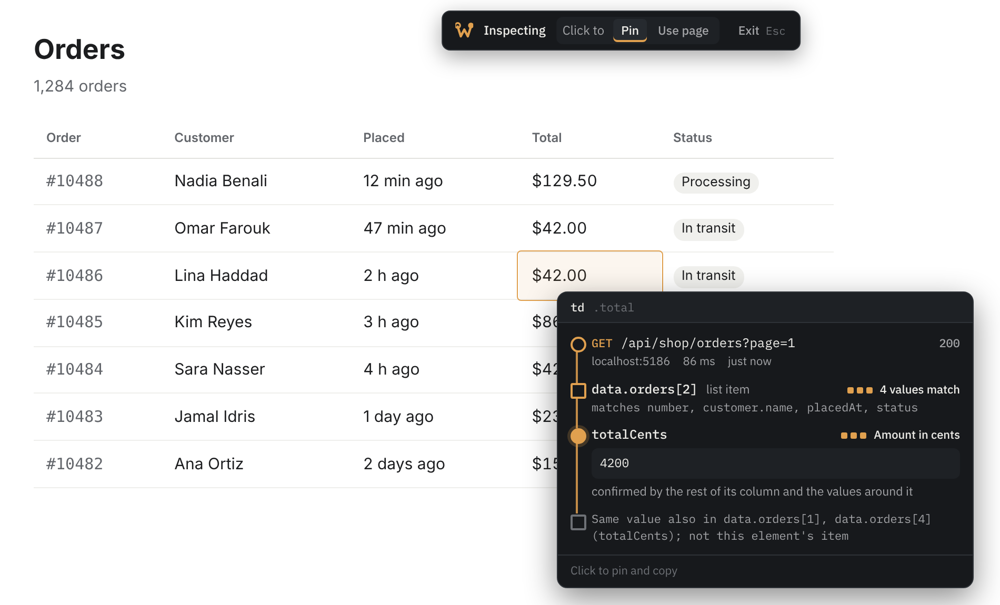
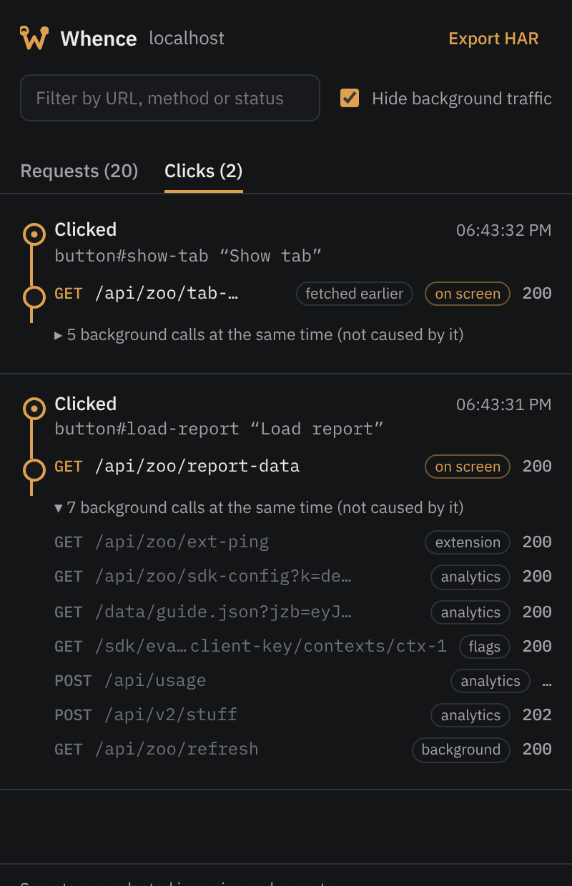
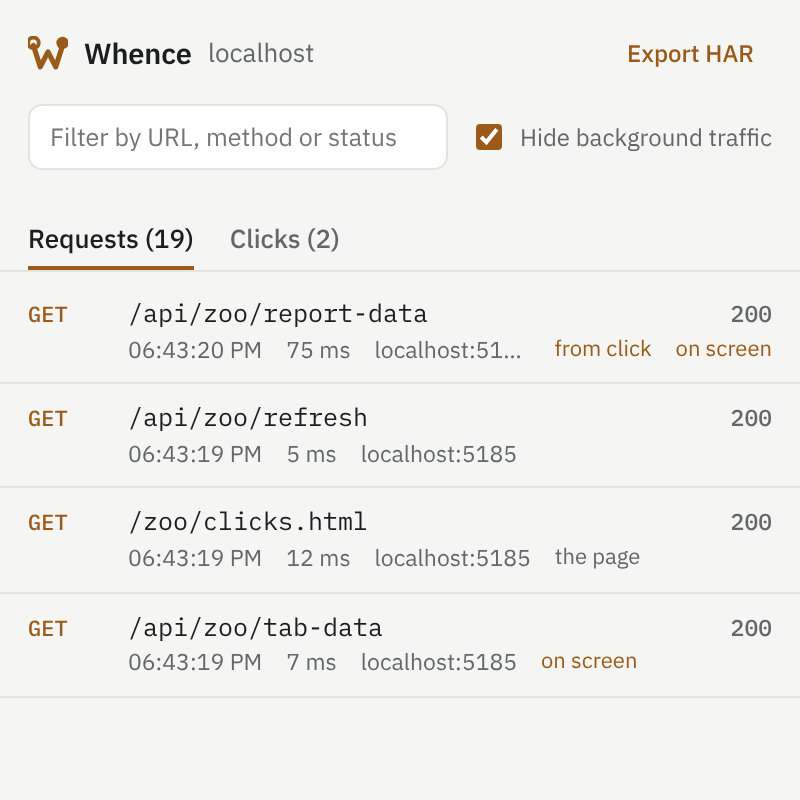

Every value on screen came from somewhere. Whence shows you where.
Hover any number, name or date on a web app and see the API request, the list item and the JSON field it came from. Click a button and see which requests that click made, with analytics and background noise set aside.
For Chrome and Chromium browsers. No account, nothing sent anywhere.
| Customer | Total | Status | Placed |
|---|
Three questions you ask every time you debug a front end
Whence watches the requests a page makes and the page itself, then connects the two. It runs on any framework and needs no changes to the app.
Where did this value come from?
Turn on inspect mode and point at anything. The tooltip draws the path from the request to the item and the field, with the evidence for the match.
- Exact field paths like
data.orders[2].totalCents - The right row, even when the same value appears in many rows
- Says when it isn't sure, instead of guessing

What did that click call?
Every click, submit, search and back/forward lists the requests it caused, in the side panel and in the tooltip of the button you clicked.
- Follows the click through timers, promises, animations and lazy-loaded code
- Finds data that was prefetched on hover, or fetched earlier and only shown now
- Marks which responses ended up on screen

What exactly did the server send?
The side panel keeps every request on the tab with its headers and bodies. Copy one with its response, as cURL, or export the session as a HAR file.
- Tokens, cookies and passwords are redacted in copies and exports
- Includes requests from iframes and micro-frontends
- Background traffic is tagged and hidden until you want it

-
Add it to Chrome
Free, from the Chrome Web Store.
-
Turn it on for your app
Open the Whence popup and enable the site, or use it on the current tab only with no permission at all.
-
Hover and click
Press Alt+Shift+A to inspect, and Alt+Shift+K for the side panel.
It knows an analytics call from the request that loaded your data
Every request is judged on four kinds of evidence, so this works on apps Whence has never seen, not from a list of known hosts.
Who made it
The script where the call started: your code, an analytics SDK (even self-hosted), or another browser extension.
Where it goes
Telemetry and feature-flag services, collection paths like /v1/traces, sign-in and translation endpoints.
What it sends
Event payloads with anonymousId or distinct_id, batches of events, compressed blobs, beacons.
What started it
A timer set before the click, the window regaining focus, a server push over a WebSocket, steady polling.
Apps rarely show a value the way the API sent it
Whence matches the page's version to the response's, so formatting doesn't hide where a value came from.
| On the page | In the response | Why they match |
|---|---|---|
| 48 210,25 $ | 48210.25 | Number formats in any locale, currency before or after |
| $19.99 | 1999 | An amount stored in cents |
| 1.3 GB | 1288490188 | File sizes in bytes, decimal or binary |
| il y a 2 heures | "2026-10-29T10:58:00Z" | Relative times and dates in several languages, timestamps in seconds or milliseconds |
| ✓ | true | A label or icon the app maps a value to, learned from the rest of the column |
| In progress | "IN_PROGRESS" | Enum names written as words |
| 7c1e52a0…8e91b3 | "7c1e52a0-3f4d-…-2d0f5c8e91b3" | IDs shortened in the middle |
| 7 users | users.length | The number of items in a list |
Built for the apps you actually debug
Any framework
- React, Vue and Angular, with component props when available
- Svelte, plain JavaScript and server-rendered pages
- D3 and charting libraries such as Chart.js, ECharts, Highcharts and Plotly
Any data source
- fetch, XHR, WebSockets and server-sent events
- JSON, GraphQL, XML, CSV, protobuf and MessagePack
- Data in the page (Next.js, Nuxt, SvelteKit), localStorage and IndexedDB
Any layout
- Iframes and micro-frontends, on the same site or others you enable
- Shadow DOM and web components
- Web workers, with DevTools open
Nothing leaves your browser
- No servers, no accounts, no analytics.Whence has no backend. It never sends what it sees anywhere.
- Gone when you close the tab.Captured requests live only in that tab's memory.
- You choose where it runs.Enable it per site, or on one tab at a time with no permission. Read the privacy policy.